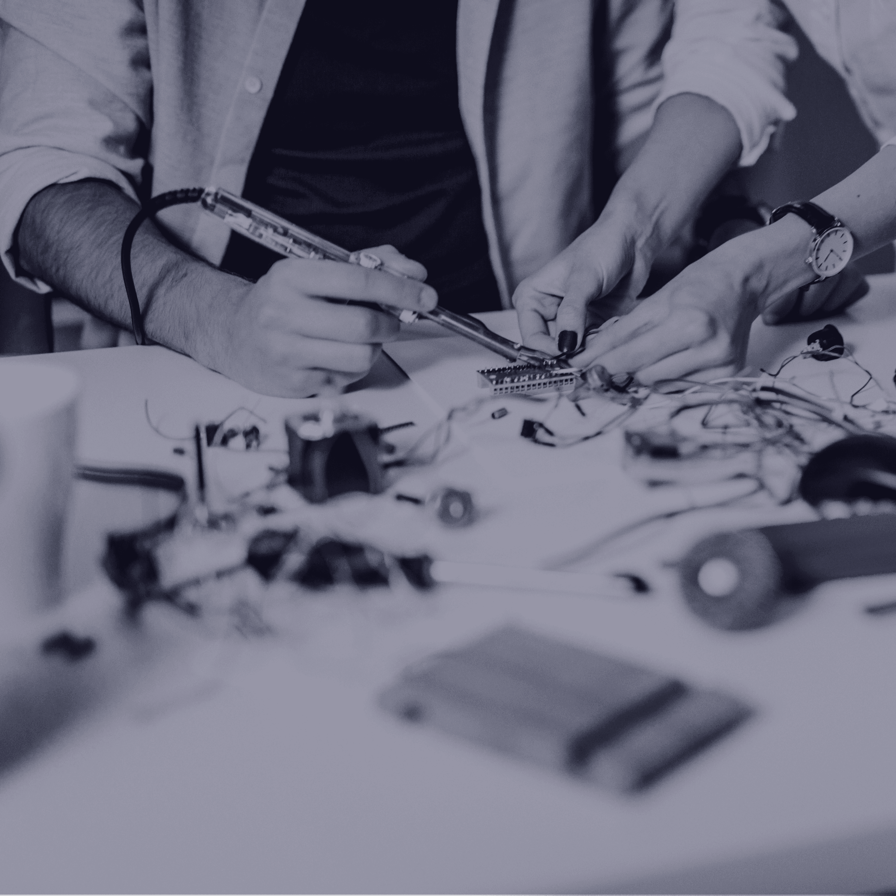

What we offer
Our service tracks
Our service tracks are designed to help organisations adopt AI in ways that are commercially relevant, operationally realistic, and aligned with how their teams actually work.
AI workshops
The duration, length, and intensity of sessions can be fully customised to meet the specific needs, objectives, and availability of your organisation. Most programmes are typically delivered across 4–6 sessions lasting around 1.5 hours each.
Programmes can be run virtually, in person, or in a hybrid format, with recordings provided for future reference. Sessions are led by both an AI specialist and an industry subject matter expert, ensuring the training remains practical and relevant to your organisation’s workflows, use cases, and approved AI tools. Supporting exercises and reading materials are also shared after each session to reinforce adoption and learning.
Explore our AI workshopsAI transformation programme
The duration, scope and intensity of the programme can be tailored to the size, complexity, and AI maturity of your organisation, although most engagements are delivered over 6 months. Designed as a comprehensive AI adoption programme, it focuses on helping organisations become AI-ready.
The programme typically covers 7 workstreams: discovery and readiness assessment, AI strategy and policy development, AI tool stack selection, use case identification and implementation, workforce upskilling, change management and internal capability-building and leadership advisory.
Explore how you can become AI readyAI intelligence programme
Designed for leaders who need to stay informed on how AI is reshaping their industry, our AI Intelligence programme provides ongoing monthly briefings covering the developments that matter most. Sessions are tailored to the interests of the audience and typically explore emerging AI tools, competitor activity, industry-specific implications and the risks and opportunities organisations should be preparing for.
Our insights are drawn from a combination of desktop research, network intelligence, vendor briefings and direct experience supporting organisations with AI adoption. The result is practical, verified intelligence that helps leaders cut through the hype, make informed decisions and anticipate change before it impacts their business. This is one of our most popular services among leadership teams.
Explore our monthly sessionsRapid prototyping programme
Many of the most valuable AI opportunities begin as simple ideas: What if this process could be automated? Could AI help us solve this problem? Is there a better way of doing this? Our Rapid Prototyping programme is designed to help organisations explore these questions quickly, without the cost, risk or commitment of full-scale development.
Using a structured experimentation approach, we help teams test AI and automation concepts within real workflows to understand what works, what doesn’t and where the greatest value can be created. We handle the technical heavy lifting while working closely with your team throughout the process, allowing ideas to be validated, refined and brought to life in a practical and cost-effective way.
Explore your AI ideas
Done-for-you AI asset creation service
Some teams don’t need to learn another AI tool — they need high-quality work delivered quickly. Our Done-For-You AI Asset Creation service supports busy teams with the production of copy, images, videos and campaign assets using a combination of AI tools, technical expertise and creative direction.
This is especially useful for creative, marketing, and advertising teams managing high volumes of content across multiple channels. Whether producing go-to-market assets, rendering image concepts, adapting creative for different formats, or scaling content production, we handle the execution so your team can increase output without increasing headcount.
Explore our portfolio